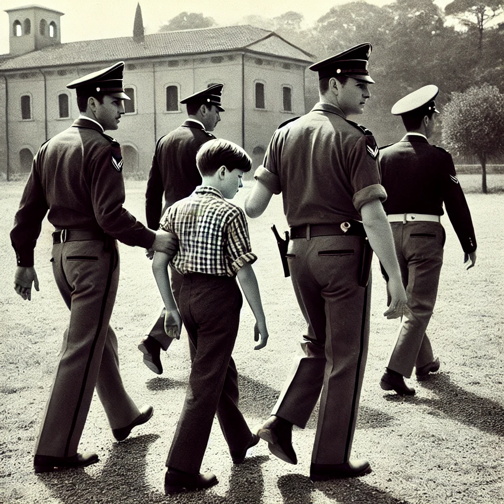
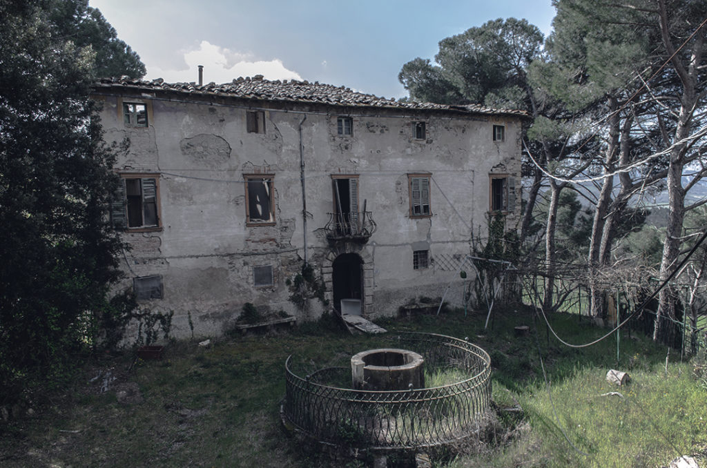

Era una tranquilla mattina d'estate quando, nell'agosto del 1986, tre giovani ragazzi scomparvero misteriosamente nei pressi del noto Bosco Secco, una piccola e fitta area boschiva della campagna toscana. Il caso scosse profondamente la comunità locale, alimentando le paure e le leggende legate al bosco, già noto per i suoi racconti inquietanti. Nonostante le numerose ricerche, dei ragazzi non si trovò alcuna traccia per giorni, e l'angoscia cresceva. Il sospetto cadde su Federico Rossi, soprannominato Freddy, un giovane uomo del paese, noto per la sua ossessione per le leggende locali e il mistero che circondava il Bosco Secco.
 Freddy, allora tredicienne, era conosciuto in paese come una figura solitaria, spesso vista aggirarsi nei pressi del bosco. I suoi interessi per i misteri medievali e i racconti popolari del luogo lo rendevano il sospettato perfetto agli occhi della comunità. Dopo vari interrogatori, le autorità decisero di arrestarlo. Tuttavia, non furono mai trovate prove concrete che lo collegassero direttamente alla scomparsa dei ragazzi. Il caso rimase aperto, ma le indagini si arenarono quando, a causa della mancanza di indizi, Freddy venne rilasciato. Le voci di paese, però, continuavano a perseguitarlo, e molti continuavano a credere che fosse implicato.
 Vicino al Bosco Secco sorge un antico casolare abbandonato, spesso menzionato nelle storie di Freddy. Si diceva che Freddy frequentasse spesso questo luogo, convinto che nascondesse degli indizi su un leggendario tesoro medievale. Il casolare, con le sue stanze in rovina e le antiche mura, era diventato un punto di ritrovo per appassionati di misteri e curiosi, attirati dalle storie di tesori nascosti e maledizioni. Durante le indagini, alcune tracce che conducevano al casolare alimentarono ulteriori speculazioni, ma senza risultati definitivi. Il luogo, tuttavia, rimane un simbolo del mistero irrisolto.
A distanza di tanti anni, il mistero del Bosco Secco continua a tormentare la comunità locale. Freddy Rossi, nonostante continui a professare la sua innocenza, rimane agli occhi di molti il principale sospettato. Le indagini ufficiali sono ormai archiviate, ma la leggenda del bosco e del casolare abbandonato continua a vivere, attirando chiunque voglia cercare di far luce sui tragici eventi del 1986. Rimarrà per sempre un mistero irrisolto che affascina e inquieta coloro che si avventurano nel Bosco Secco, in cerca di risposte che, forse, non verranno mai trovate.